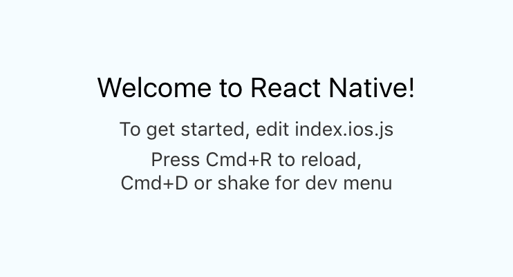

In this article, I show you how to implement Relay with a React Native app. If you have not already, follow the tutorial on implementing GraphQL with Rails so that you have a working GraphQL implementation (required for Relay).
Install react-native and initialize a new project. [1]
npm install -g react-native-cli
react-native init RelayApp --verbose
Go grab a coffee. It will take a while.
Next, let's configure Babel Relay.
cd RelayApp
npm install babel-core --save-dev
npm install babel-preset-react-native --save-dev
npm install babel-relay-plugin --save-dev
npm install react-relay --save
Good. Setup .babelrc next.
touch .babelrc
Paste in the following:
{
"passPerPreset": true,
"presets": [
"./scripts/babelRelayPlugin",
"react-native"
]
}
Setup babelRelayPlugin.js.
mkdir scripts
touch scripts/babelRelayPlugin.js
Paste the following:
'use strict'
const getBabelRelayPlugin = require('babel-relay-plugin')
const introspectionQuery = require('graphql/utilities').introspectionQuery
const request = require('sync-request')
const url = 'http://localhost:3000/graphql'
const response = request('POST', url, {
json: {
query: introspectionQuery
}
})
const schema = JSON.parse(response.body.toString('utf-8'))
module.exports = { plugins: [getBabelRelayPlugin(schema.data, { abortOnError: true })] }
Install the associated dependencies.
npm install graphql --save-dev
npm install sync-request --save-dev
Build and run the iOS application.
react-native run-ios
The app should load up just fine. Nice work so far!

If instead you receive an error like
SyntaxError: Unexpected end of input, go back to the
article
on creating a Rails GraphQL server. [2]
We're finally ready to create our first Relay Fragment. It will very simply pull in the first user's email address.
At the top of index.ios.js add the following:
import Relay, {
Route,
RootContainer,
DefaultNetworkLayer
} from 'react-relay'
Relay.injectNetworkLayer(new DefaultNetworkLayer('http://localhost:3000/graphql'))
Setup the UserRoute class just above the last line of
index.ios.js.
...
class UserRoute extends Route {
static paramDefinitions = {
userID: { required: true }
}
static queries = {
user: () => Relay.QL`
query {
user(id: $userID)
}
`
}
static routeName = 'UserRoute'
}
...
AppRegistry.registerComponent('RelayApp', () => RelayApp)
Just below the UserRoute class setup the UserInfo
component.
...
class UserInfo extends Component {
render () {
const user = this.props.user
return (
<Text>email: {user.email}</Text>
)
}
}
UserInfo = Relay.createContainer(UserInfo, {
fragments: {
user: () => Relay.QL`
fragment on User {
id,
email
}
`
}
})
...
Finally, create a RootContainer and place it somewhere inside the
render() method of the RelayApp component.
...
class RelayApp extends Component {
render () {
return (
<View style={styles.container}>
<Text style={styles.welcome}>
Welcome to React Native!
</Text>
<Text style={styles.instructions}>
To get started, edit index.ios.js
</Text>
<Text style={styles.instructions}>
Press Cmd+R to reload,{'\n'}
Cmd+D or shake for dev menu
</Text>
<RootContainer
Component={UserInfo}
route={new UserRoute({userID: '1'})}
renderFetched={(data) => <UserInfo {...this.props} {...data} />}
/>
</View>
)
}
}
...
Save those changes and refresh the iOS simulator (Cmd + R). You
should see the first user's email address.
If instead you receive an error or do not see an email address go back to the article on creating a Rails GraphQL server. [2]
That's it! You just used Relay coupled with a Rails GraphQL Server to fetch data into a React Native application.
[1] https://facebook.github.io/react-native/docs/tutorial.html
[2] http://mot.la/2016-05-07-getting-started-with-rails-graphql.html